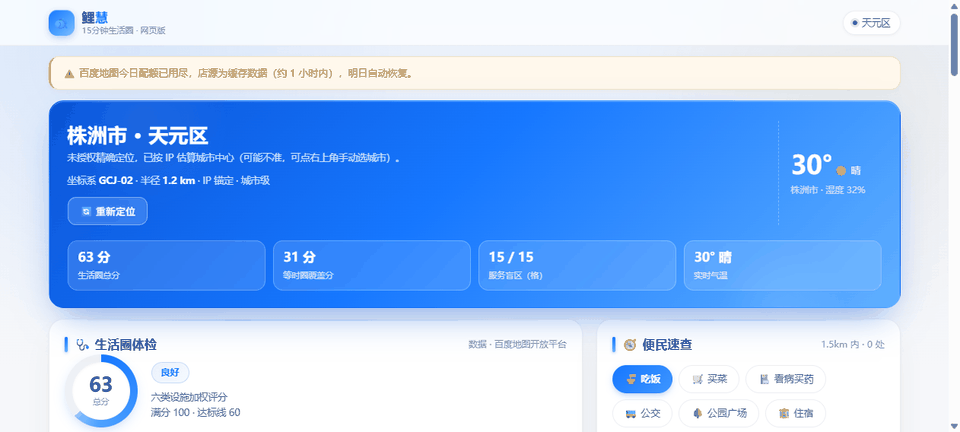
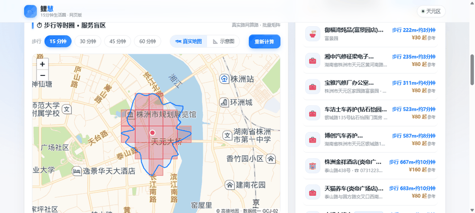
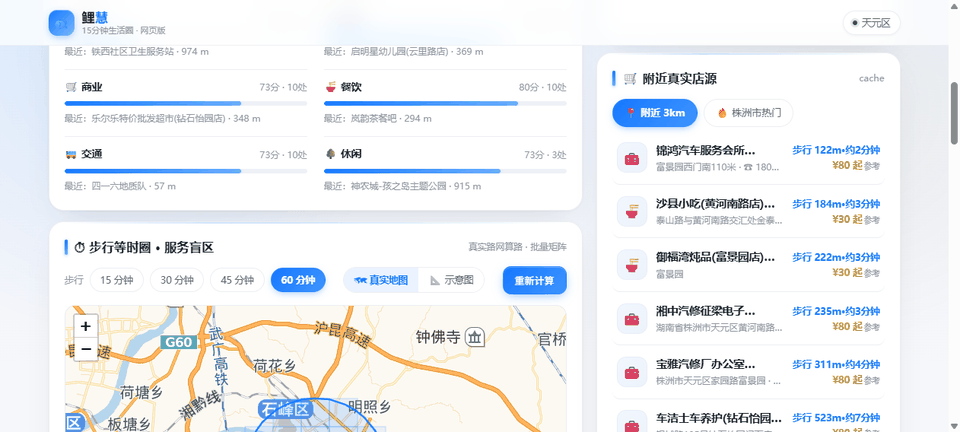

不只是地图 —— 真正会体检、会规划、会行动的生活圈 AI 助手
鲤慧基于百度地图开放能力，用真实路网步行等时圈给你的 15 分钟生活圈做「体检」：哪里有盲区、哪家店步行几分钟、外卖平台怎么选——全部真实可验证，服务端纯 Node 标准库零依赖。
同一个生活圈，两种完全不同的答案
从体检、规划到下单，覆盖生活圈全链路
六维评分（买菜/就餐/就医/教育/休闲/出行），真实路网批量算路，服务盲区直出改进建议。
不是直线圆——沿真实人行路网算出「15 分钟能走多远」，盲区一眼看穿。
附近 3km 按定位实时拉、本城热门城市级检索；百度 POI 真实店名/坐标/电话，落盘缓存护配额。
每家店挂美团/饿了么/抖音「搜这家店」深链；配了真实接口可自动核实在架/价格/评分，绝不编造数据。
批量矩阵实测「走过去要几分钟」，隔河高架不再骗人；带「真实步行」徽章。
JSON / SQLite 双驱动的用户画像与记忆沉淀，常搜类目自动上浮，人机协同安全运维。
多模态识图、语音对话与播报、工具调用；关怀模式下自动放慢语速、简化表达。
三角色最小权限（guest/user/admin）、scrypt 口令、HMAC 无状态令牌；令牌桶按身份限速并下发标准头。
假密钥诱捕、IP 自动封禁、出网脱敏、CSP 浏览器沙箱、多 AK 池自愈轮换；459 条攻击用例全绿。
地图能力全部封装为 MCP 工具，任何支持 MCP 的 Agent 都能直接复用鲤慧的生活圈能力。
发现地址缺失/不准？一键补报，云端留存后所有人的检索结果自动生效。
微信小程序（217KB 轻包）、uni-app 多端 APP、Web Premium 仪表盘，一套服务端全支撑。
一个助手，覆盖日常生活方方面面
输入候选小区，体检报告直接对比六维得分与盲区：哪边缺诊所、哪边买菜远，一页看清。
生活决策关怀模式大字高对比，语音对话放慢播报；医院、药店、菜场的真实步行路线直接规划。
适老关怀附近真实店铺按真实步行距离排序，跳美团/饿了么/抖音看实时价格评分，选品留痕不碰资金。
消费决策出门前给酒店周边做体检：15 分钟能步行到什么？缺什么？带家人出门心里有数。
出行规划等时圈 + 盲区数据可导出，社区配套评估、城市研究的数据底座；标准规范知识库做评分依据。
研究分析拍一张门牌问「这是哪、周围有啥」，语音问「附近哪家火锅便宜」——多模态与地图能力组合回答。
智能问答真实运行截图，先睹为快



三端接入 · 一颗零依赖核心 · 安全默认
AK 零下发node src/app.js 即起三步跑起来，本地体验完整能力
小程序端用微信开发者工具导入 02-lh-wechat-mp 目录即可 · 详细文档见仓库 README 与 00-设计文档